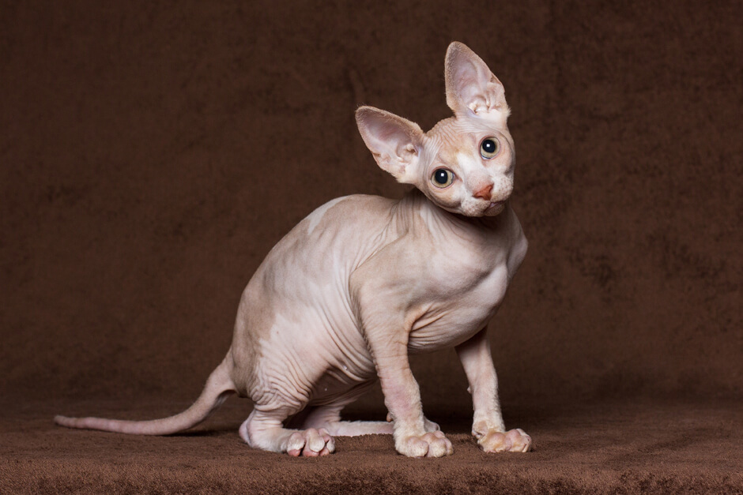

Бурманская кошка не сложна в уходе, поскольку имеет минимальный подшёрсток, не позволяющий спутываться шерсти в колтуны. Достаточно пару раз в неделю проходиться по шелковистой шубке гребнем с частыми зубчиками и массировать кожу массажной щёткой, удаляя отмершие волоски и стимулируя рост новых. Правда, в период сезонной линьки вычёсывать домашнего питомца придётся минимум два раза в сутки.
Русская голубая кошка не сложна в уходе, поскольку имеет минимальный подшёрсток, не позволяющий спутываться шерсти в колтуны. Достаточно пару раз в неделю проходиться по шелковистой шубке гребнем с частыми зубчиками и массировать кожу массажной щёткой, удаляя отмершие волоски и стимулируя рост новых. Правда, в период сезонной линьки вычёсывать домашнего питомца придётся минимум два раза в сутки.
Кудрявые красавцы корниш-рекс не сложна в уходе, поскольку имеет минимальный подшёрсток, не позволяющий спутываться шерсти в колтуны. Достаточно пару раз в неделю проходиться по шелковистой шубке гребнем с частыми зубчиками и массировать кожу массажной щёткой, удаляя отмершие волоски и стимулируя рост новых. Правда, в период сезонной линьки вычёсывать домашнего питомца придётся минимум два раза в сутки.


Американские жесткошёрстные кошки отличаются волнистой шерстью. Эффект «проволочной шубки» создают шерстинки на бёдрах, хвосте, голове и хребте, которые либо надломлены, либо загнуты и скреплены между собой. Животных этой породы расчёсывать не рекомендуется даже после купания, иначе «пружинки» шерсти исчезнут, и животное потеряет свой шарм и обаяние.
Одни считают, что сфинксы – это лучшие кошки в мире, другие совершенно не понимают, как можно хотя бы приблизиться к такому животному, не говоря уже о том, чтобы погладить его. Тем не менее, сфинксам нужна ласка и внимание. А ещё они нуждаются в тепле: бесшёрстные кошки часто мёрзнут, и чтобы согреться, могут лечь на батарею или прислониться к работающей духовке, что чревато ожогами нежной кошачьей кожи. Поэтому владельцу сфинкса необходимо позаботиться о тёплой лежанке для питомца и о том, чтобы в доме не было сквозняков.